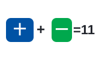
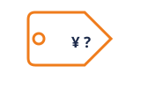
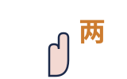
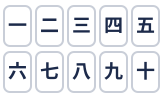
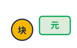
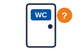

01一到十 · One to ten一二三四五六七八九十
一 yī 二 èr 三 sān 四 sì 五 wǔ 六 liù 七 qī 八 bā 九 jiǔ 十 shí。
One to ten. Tap Listen and repeat each in your head — the tones are the workout.
មួយ ពីរ បី បួន ប្រាំ ប្រាំមួយ ប្រាំពីរ ប្រាំបី ប្តាំ ដប់ — សូរ គឺ ការ ហាត់។
Numbers & Survival — shop, order, find your way · Count to ten, then the whole system opens
After ten, Chinese numbers are pure Lego: 11 is 'ten-one', 20 is 'two-ten', 123 is 'one-hundred-two-ten-three'. No new words ever — just slots you already know.

十一 = 10+111–19: ten, then the digit
多少钱？Two words unlock every market
两 vs 二Two before things is liǎng, not èrLearn 1–10 → build any number → ask a price → order a coffee → find the toilet. A whole afternoon outside, in ten lines.

Space listen · ← → move · K show text
一 yī 二 èr 三 sān 四 sì 五 wǔ 六 liù 七 qī 八 bā 九 jiǔ 十 shí。
One to ten. Tap Listen and repeat each in your head — the tones are the workout.
មួយ ពីរ បី បួន ប្រាំ ប្រាំមួយ ប្រាំពីរ ប្រាំបី ប្តាំ ដប់ — សូរ គឺ ការ ហាត់។
十一 shíyī = 11，二十 èrshí = 20，一百 yìbǎi = 100。
11 is 'ten-one', 20 is 'two-ten', 100 is 'one-hundred'. The machine never stops.
១១ = ដប់+មួយ · ២០ = ពីរ×ដប់ · ១០០ = មួយរយ។
数东西用“两”：两个人 liǎng ge rén，不說二个人。
Before counted things use 两 (liǎng): 'two people' is 两个人. 二 is for counting and math.
មុន នាម ពាក្យ ប្រើ liǎng៖ មនុស្ស ពីរ នាក់។
这个多少钱？Zhège duōshao qián?
How much is this? — the two magic words of every market in China.
តើ នេះ ថ្លៃ ប៉ុន្មាន?

八十块 bāshí kuài = ¥80。“块”是口语的“元”。
Eighty kuài = ¥80. Spoken Chinese says 块 where prices print 元.
យួន ប៉ុន = ៨០ យួន។
我要一杯咖啡。Wǒ yào yì bēi kāfēi.
I'd like one cup of coffee. Swap in anything: 我要茶, 我要水.
ខ្ញុំ ចង់ បាន កាហ្វេ មួយ កែវ។

请问，洗手间在哪儿？Qǐng wèn, xǐshǒujiān zài nǎr?
Excuse me, where is the toilet? 在 = at, 哪儿 = where.
សុំ ទោស បន្ទប់ ទឹក នៅ ឯណា?
电话号码一个数字一个数字读：138，0201。
Phone numbers are read digit by digit — just the ten sounds you already know.
លេខ ទូរស័ព្ទ អាន ម្តង មួយ លេខ។
Numbers and phrases follow HSK-1 / Yoyo Chinese Beginner Courses Glossary (cdn.yoyochinese.com) and hskacademy level-1 material. Khmer support checked against the Wikivoyage Khmer phrasebook. Verified 2026-11-09.
Recall the answer in your head first, then tap to check and listen.
十是第二声，往上走；四是第四声，往下砸。用手画音高。
十 rises (tone 2), 四 falls hard (tone 4). Draw the pitch in the air with your hand while listening.
ដប់ សូរ ឡើង លើ · បួន សូរ ចុះ ក្រោម។
They differ only by tone, so drill them as a minimal pair — ten times listening beats ten rules.
东西前用两：两个人、两杯。数数和电话号码用二。
两 before counted things (两个人, 两杯); 二 for counting sequences and phone numbers.
liǎng ដាក់ មុន នាម (ពីរ នាក់) · èr សម្រាប់ នាប់ និង លេខ ទូរស័ព្ទ។
口语说块，菜单写元。意思一样：一百块 = 100 元。
Spoken: 块. Printed menus: 元. Same money — 一百块 = ¥100.
និយាយ ប្រើ kuài · សរសេរ ប្រើ yuán។ តម្លៃ ដូចគ្នា។
太贵了！便宜一点，行吗？
Too expensive! A little cheaper, OK? (markets: always ask once, smiling)
ថ្លៃ ពេក! សូម បញ្ចុះ តម្លៃ បន្តិច បាន ទេ?
两个，谢谢。
Two, please. (number + 个 + nothing — the default measure word)
យក ពីរ យ៉ាង អរគុណ។
现在三点。三点一刻 / 三点半。
It's three. 三点一刻 = 3:15, 三点半 = 3:30.
ម៉ោង បី។ បី ម៉ោង ជាតិ (15 នាទី) / បី ម៉ោង កន្លះ (30 នាទី)។
ថ្លៃ ពេក។
ឆ្ងាញ់ ណាស់!
ខ្ញុំ មិន យល់ ទេ។
两杯水、三个人、四个苹果。
Two cups of water, three people, four apples. 个 works when you're unsure.
ទឹក ពីរ កែវ · មនុស្ស បី នាក់។
八点上课，十二点吃饭。
Class at 8, lunch at 12. No verb needed.
ចូល រៀន ម៉ោង ប្រាំបី (8)។ ញ៉ាំ អាហារ ម៉ោង ដប់ពីរ (12)។
厕所在哪儿？地铁站在哪儿？
Where's the toilet? Where's the metro station?
បន្ទប់ ទឹក នៅ ឯណា? ស្ថានីយ រថភ្លើង ក្រោម ដី នៅ ឯណា?
Tap a word's play button to hear it. Hide one side, then recall it before you tap to check.
一 yī 二 èr 三 sān 四 sì 五 wǔ 六 liù 七 qī 八 bā 九 jiǔ 十 shí。
One to ten. Tap Listen and repeat each in your head — the tones are the workout.
十一 shíyī = 11，二十 èrshí = 20，一百 yìbǎi = 100。 数东西用“两”：两个人 liǎng ge rén，不說二个人。
11 is 'ten-one', 20 is 'two-ten', 100 is 'one-hundred'. The machine never stops. Before counted things use 两 (liǎng): 'two people' is 两个人. 二 is for counting and math.
这个多少钱？Zhège duōshao qián? 八十块 bāshí kuài = ¥80。“块”是口语的“元”。
How much is this? — the two magic words of every market in China. Eighty kuài = ¥80. Spoken Chinese says 块 where prices print 元.
我要一杯咖啡。Wǒ yào yì bēi kāfēi.
I'd like one cup of coffee. Swap in anything: 我要茶, 我要水.
请问，洗手间在哪儿？Qǐng wèn, xǐshǒujiān zài nǎr? 电话号码一个数字一个数字读：138，0201。
Excuse me, where is the toilet? 在 = at, 哪儿 = where. Phone numbers are read digit by digit — just the ten sounds you already know.
Q. “十”和“四”老听混，怎么办？
Q. I keep confusing shí (10) and sì (4). Help?
A. 十是第二声，往上走；四是第四声，往下砸。用手画音高。
A. 十 rises (tone 2), 四 falls hard (tone 4). Draw the pitch in the air with your hand while listening.
ដប់ សូរ ឡើង លើ · បួន សូរ ចុះ ក្រោម។
Q. 什么时候用“两”，什么时候用“二”？
Q. When 两 and when 二?
A. 东西前用两：两个人、两杯。数数和电话号码用二。
A. 两 before counted things (两个人, 两杯); 二 for counting sequences and phone numbers.
liǎng ដាក់ មុន នាម (ពីរ នាក់) · èr សម្រាប់ នាប់ និង លេខ ទូរស័ព្ទ។
Q. 价格说“块”还是“元”？
Q. Do people say kuài or yuán for prices?
A. 口语说块，菜单写元。意思一样：一百块 = 100 元。
A. Spoken: 块. Printed menus: 元. Same money — 一百块 = ¥100.
និយាយ ប្រើ kuài · សរសេរ ប្រើ yuán។ តម្លៃ ដូចគ្នា។
Q. 这个多少钱？——八十块。
Q. How much? — Eighty yuan.
A. 太贵了！便宜一点，行吗？
A. Too expensive! A little cheaper, OK? (markets: always ask once, smiling)
ថ្លៃ ពេក! សូម បញ្ចុះ តម្លៃ បន្តិច បាន ទេ?
Q. 你要几个？
Q. How many do you want?
A. 两个，谢谢。
A. Two, please. (number + 个 + nothing — the default measure word)
យក ពីរ យ៉ាង អរគុណ។
Q. 现在几点？
Q. What time is it now?
A. 现在三点。三点一刻 / 三点半。
A. It's three. 三点一刻 = 3:15, 三点半 = 3:30.
ម៉ោង បី។ បី ម៉ោង ជាតិ (15 នាទី) / បី ម៉ោង កន្លះ (30 នាទី)។
太贵了。
Too expensive.
好吃！
Delicious!
我听不懂。
I don't understand (what I hear).
문G. 三 + 个 + 人
문G. Pattern: Number + measure word + noun — three people.
A. 两杯水、三个人、四个苹果。
A. Two cups of water, three people, four apples. 个 works when you're unsure.
ទឹក ពីរ កែវ · មនុស្ស បី នាក់។
문G. 现在三点。
문G. Pattern: time words are just numbers — 点 o'clock, 半 half.
A. 八点上课，十二点吃饭。
A. Class at 8, lunch at 12. No verb needed.
ចូល រៀន ម៉ោង ប្រាំបី (8)។ ញ៉ាំ អាហារ ម៉ោង ដប់ពីរ (12)។
문G. 洗手间在哪儿？
문G. Pattern: Thing + 在哪儿? = 'Where is …?'
A. 厕所在哪儿？地铁站在哪儿？
A. Where's the toilet? Where's the metro station?
បន្ទប់ ទឹក នៅ ឯណា? ស្ថានីយ រថភ្លើង ក្រោម ដី នៅ ឯណា?
Numbers and phrases follow HSK-1 / Yoyo Chinese Beginner Courses Glossary (cdn.yoyochinese.com) and hskacademy level-1 material. Khmer support checked against the Wikivoyage Khmer phrasebook. Verified 2026-11-09.
Say it in your head first, then tap the box to check.